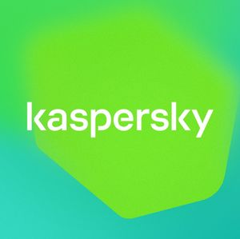

Dmitry Gladkikh
Front-end Developer
I am an experienced front-end developer who enjoys building modern UI using the latest in web technologies. I frequently leverage the React and Redux ecosystems (Redux Toolkit). I ❤️ styled-components, xstyled, Tailwind CSS, Chakra UI.
Currently, I work at Kaspersky on the Infrastructure Solutions & Services Development team.
I started my journey in Computer Science at the Russian University of Transport (MIIT) in Moscow. The first programming languages that I learned were Turbo Pascal and Assembler. After graduation, I started working for a small company that created training programs for train drivers. We've used various technologies: Adobe Flash, Ogre-3D, AR (when it first came into being). Next I started exploring .NET technologies such as ASP.NET, Windows Forms, WPF, Microsoft SQL Server, etc. I worked as a back-end developer for several years. Then I started to get interested in the front-end. At that time, the popular framework AngularJS appeared, which blew everyone's minds. I decided to become a full-fledged front-end developer. Then came React. Since then it has been my go-to tool. Also, I play with different things like effector, XState, Vue.js, D3.js, elm.
When I'm not working, I enjoy traveling and trying my hand at photography, working on my pet projects, trying hard to learn more English.

March 2020 - Present
Front-end developer (React, Redux Toolkit, TypeScript, Node.js, WebSockets, styled-components, Jest). Developing internal and external services and tools, components library.
June 2013 - February 2020
.NET developer (ASP.NET, Windows Forms, MS SQL Server).
Full stack developer (ASP.NET Core, AngularJS, React, Redux, effector, JavaScript, TypeScript)
January 2013 - February 2013
Front-end developer (Action Script). Developing UI part for the Speech Analysis project
December 2009 - November 2012
Intern, developer (ActionScript, C++, Ogre-3D). Work on developing multimedia training programs for train drivers